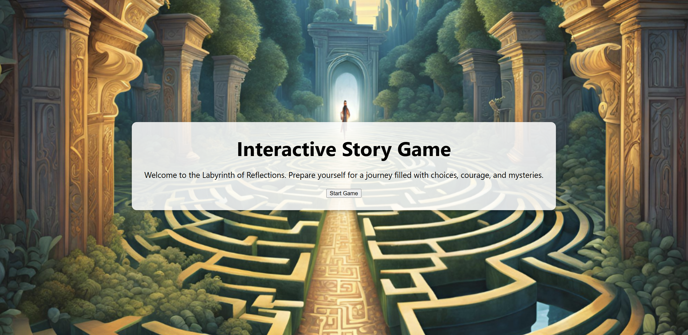
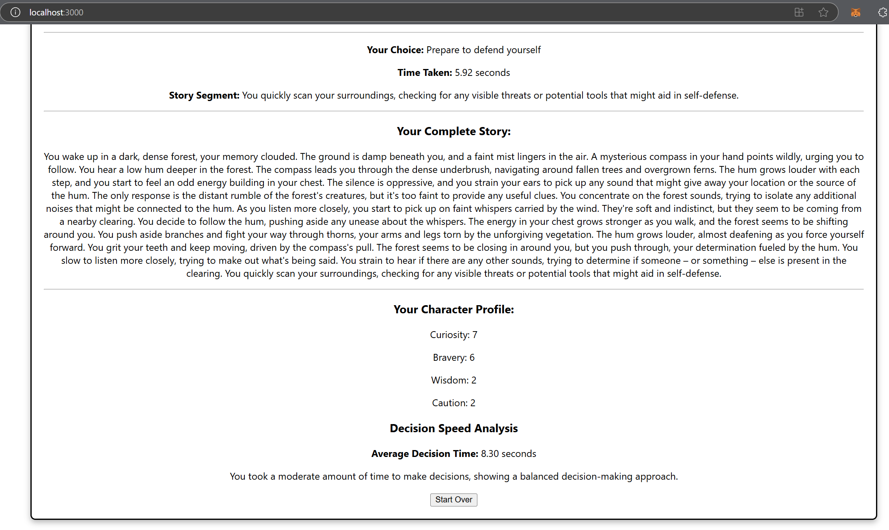

Interactive Story Game
This project generates personalized game narratives in real-time based on player behavior and decisions, enhancing engagement through dynamic story paths and multiple possible endings.
⚠️ Note: This project is still currently under development… ⚠️
The source code is not visible at the moment because the repository is currently private. It will be made public once the project is complete.
Tech Stack
- Backend: Flask (Python with a virtual environment for managing dependencies)
- Frontend: React (JavaScript, CSS, HTML)
- LLMs: Llama3.2 and T2I diffusion model (Ollama)
- Dependencies:
- Python packages (listed in
requirements.txt)
- JavaScript packages (listed in
package.json)
Current Features
- Dynamic Story Generation: The story evolves based on player decisions, making each playthrough unique.
- Player Attributes: Choices impact attributes like bravery, wisdom, curiosity, etc., shaping the player’s character profile.
- 10 Breakpoints: The game is designed to end within 10 decision points (for testing purposes).
- Text-to-Image Generation: Background images are dynamically generated based on the story segments.
- Real-time Decision Feedback: Players receive feedback on their decision speed and style upon completing the game.
Sample Outputs

------
